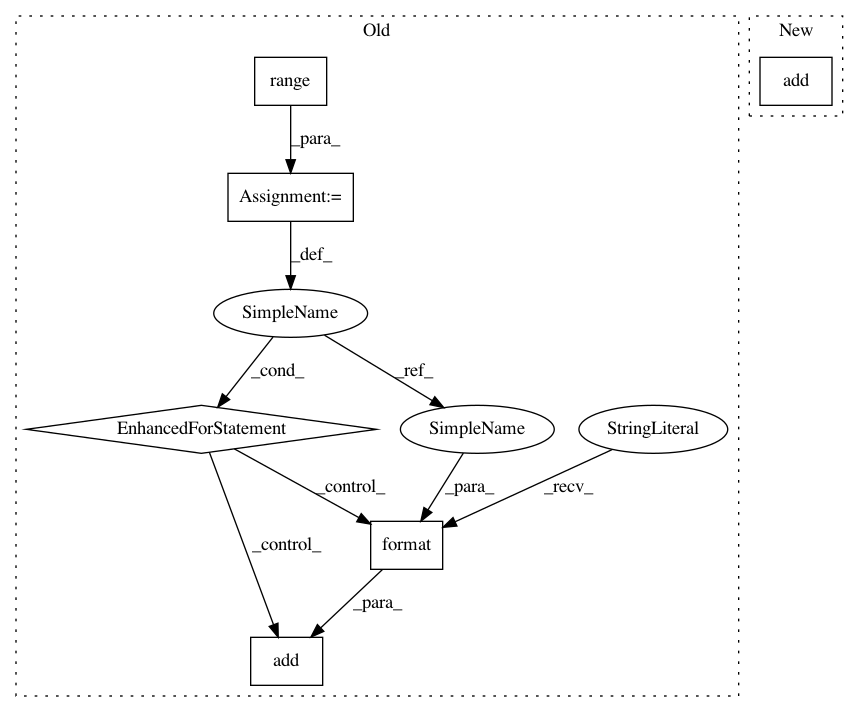

e850d36cab88360177f85d98d73c5efb4d9925ba,torch_geometric/transforms/graclus.py,Graclus,__call__,#Graclus#Any#Any#,10
Before Change
data.position = positions[0]
data.input = perm_input(data.input, perm)
for i in range(2, self.level + 2):
data.add("adj_{}".format(i), adjs[i - 1])
data.add("position_{}".format(i), positions[i - 1])
return data
def adj_distance(adj, position):
After Change
data.adj = None
data.add("adjs", adjs)
data.position = None
data.add("positions", positions)
return data
In pattern: SUPERPATTERN
Frequency: 3
Non-data size: 6
Instances
Project Name: rusty1s/pytorch_geometric
Commit Name: e850d36cab88360177f85d98d73c5efb4d9925ba
Time: 2017-11-20
Author: matthias.fey@tu-dortmund.de
File Name: torch_geometric/transforms/graclus.py
Class Name: Graclus
Method Name: __call__
Project Name: dmlc/gluon-nlp
Commit Name: 70a188776f7470c838dd22b1636462b75573a734
Time: 2020-07-16
Author: lausen@amazon.com
File Name: src/gluonnlp/models/roberta.py
Class Name: RobertaEncoder
Method Name: __init__
Project Name: dmlc/gluon-nlp
Commit Name: 70a188776f7470c838dd22b1636462b75573a734
Time: 2020-07-16
Author: lausen@amazon.com
File Name: src/gluonnlp/models/bert.py
Class Name: BertTransformer
Method Name: __init__
Project Name: rusty1s/pytorch_geometric
Commit Name: e850d36cab88360177f85d98d73c5efb4d9925ba
Time: 2017-11-20
Author: matthias.fey@tu-dortmund.de
File Name: torch_geometric/transforms/graclus.py
Class Name: Graclus
Method Name: __call__